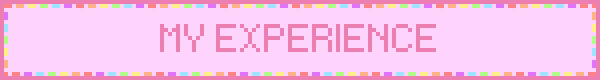

My Internship Experience
Internship at Majlis Daerah Kuala Pilah at ICT department.
What I Do
- Restarting a server for a website crash.
- Designing a corporate website for client.
- Attend a meeting with other department.
- Manage the system access in organization official website.
- Help colleague with technical issues.
What I Get
- Know the overall steps in restarting the server.
- Able to fulfill thr client needs and requirement of specific design they want.
- Get to improve social skills.
- Understand the organizational work hierarchy.
- Improve my knowledge and problem solving regarding to tecnicalities.
My Volunteering Experience
Minggu Destini Siswa Oct 2023-Feb 2024 session.
What I Do
- Planning a strategy on how to organize an event and new students.
- Work together with my teamates to handle a huge amount of students .
- Having a post-mortem to disscuss about how the event and plans turn out to be.
- Manage the activities for students to participate.
- Help students that have some issues and probleem regarding UITM portals.
What I Get
- Gain a knowledge and empower planning skills.
- Able to commit and work as a team.
- Get to improve the plan and make a decision.
- Able to socialize and make engagement.
- Improve the responsibilities and leadership skills.
My Studying Experience
ENT 300 project by selling ice cream.
What I Do
- Plan and run a business project with friends.
- Promote and sell ice cream to customers in UITM area.
- Understand what customers want and make them happy.
- Plan on profit target, budget and make promotions
- Handle issues like keeping products fresh and cold or getting them to customers.
What I Get
- Learn how to run a small business.
- Learn to work well with others.
- Understand what people like to buy.
- Make profits and get recognized for good work.
- Feel more confident about starting and running a business.
My Studying Experience
High school biology experiment for frog dissection.
What I Do
- Perform a dissection on a specimen, likely a frog.
- Work collaboratively with a group of classmates.
- Use proper laboratory tools and protective equipment like gloves and masks.
- Follow instructions from teachers and adhere to laboratory safety procedures.
- Document and present the dissection findings, possibly framing the specimen for display.
What I Get
- Hands-on experience in learning anatomy and biology.
- Teamwork and problem-solving skills through group collaboration.
- Better understanding of dissection techniques and specimen anatomy.
- Knowledge of lab safety and protocol adherence.
- A sense of accomplishment and a physical representation of the project.